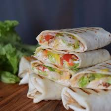

Chicken Wrap

Description
This delicious chicken wrap features tender, spiced diced chicken strips paired with crisp lettuce, a tangy kick from sweet chili sauce, and a burst of flavor from fresh salsa. Wrapped up in a soft tortilla, it's the perfect balance of savory, spicy, and sweet, making it an ideal meal for lunch or a quick dinner.
Ingredients
- 2 tortilla wraps
- 2 chicken breast fillets
- 1 tablespoon olive oil
- spices of choice
- 1 teaspoon black pepper
- 2 tablespoons sweet chilli sauce
- 1000 Islands sauce
- 1 tomato
- 1 onion
Steps
- pour olive oil on a pan at medium heat
- Dice the chicken breast fillets and spice as desired
- Fry chicken fillets on the pan for 5 minutes, flip and repeat for another 5 minutes
- Cut the onion and tomato and mix them into a bowl
- Add black pepper spice to the tomato and onion mixture and sauce with sweet chilli sauce
- Pour 1000 islands sauce onto each open tortilla in a line at the center
- Sprinkle some chicken fillets onto the sauce
- Layer the tomato and onions on top of the chiken
- Add a little bit of 1000 islands sauce on top of the tomato and onions
- Fold the tortillas into a wrap
- Fry the finished wraps on a pan at medium heat for 1 minute each to seal them
- Serve!
Home